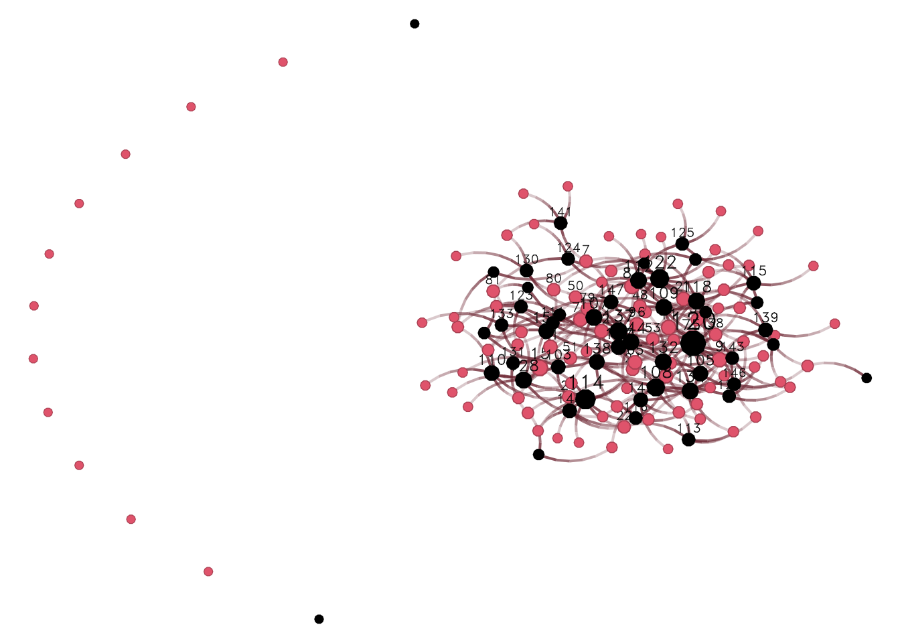

6.2 Example 2: Bi-partite networks
In the case of bipartite networks (sometimes called affiliation networks,) we can
use ergm’s terms for bipartite graphs to corroborate what we discussed
here. For example, the two-star term. Let’s start simulating a bipartite
network using the edges and two-star parameters. Since the k-star term
is usually complex to fit (tends to generate degenerate models,) we will
take advantage of the Log() transformation function in the ergm package
to smooth the term.11
The bipartite network that we will be simulating will have 100 actors and
50 entities. Actors, which we will map to the first level of the ergm terms,
this is, b1star b1nodematch, etc. will send ties to the entities,
the second level of the bipartite ERGM. To create a bipartite network, we will
create an empty matrix of size nactors x nentitites; thus, actors are
represented by rows and entities by columns.
# Parameters for the simulation
nactors <- 100
nentities <- floor(nactors/2)
n <- nactors + nentities
# Creating an empty bipartite network (baseline)
net_b <- network(
matrix(0, nrow = nactors, ncol = nentities), bipartite = TRUE
)
# Simulating the bipartite ERGM,
net_b <- simulate(net_b ~ edges + Log(~b1star(2)), coef = c(-3, 1.5), seed = 55)Let’s see what we got here:
## edges Log~b1star2
## 245.000000 5.746203
Notice that the first nactors vertices in the network are the actors, and
the remaining are the entities. Now, although the ergm package features
bipartite network terms, we can still fit a bipartite ERGM without explicitly
declaring the graph as such. In such case, the b1star(2) term of a bipartite
network is equivalent to an ostar(2) in a directed graph. Likewise, b2star(2)
in a bipartite graph matches the istar(2) term in a directed graph. This
information will be relevant when fitting the ERGM. Let’s transform the bipartite
network into a directed graph. The following code block does so:
# Identifying the edges
net_not_b <- which(as.matrix(net_b) != 0, arr.ind = TRUE)
# We need to offset the endpoint of the ties by nactors
# so that the ids go from 1 through (nactors + nentitites)
net_not_b[,2] <- net_not_b[,2] + nactors
# The resulting graph is a directed network
net_not_b <- network(net_not_b, directed = TRUE)Now we are almost done. As before, we need to use node-level covariates to put the constraints in our model. For this ERGM to reflect an ERGM on a bipartite network, we need two constraints:
- Only ties from actors to entities are allowed, and
- entities can only receive ties.
The corresponding offset terms for this model are: nodematch("is.actor") ~ -Inf,
and nodeocov("isnot.actor") ~ -Inf. Mathematically:
\[\begin{align*} \text{NodeMatch(x = "is.actor")} &= \sum_{i<j} y_{ij}\mathbb{1}\left(x_i = x_j\right) \\ \text{NodeOCov(x = "isnot.actor")} &= \sum_{i} x_i \times \sum_{j<i} y_{ij} \end{align*}\]
In other words, we are setting that ties between nodes of the same class are forbidden, and outgoing ties are forbidden for entities. Let’s create the vertex attributes needed to use the aforementioned terms:
net_not_b %v% "is.actor" <- as.integer(1:n <= nactors)
net_not_b %v% "isnot.actor" <- as.integer(1:n > nactors)Finally, to make sure we have done all well, let’s look how both networks–bipartite and unimodal–look side by side:
# First, let's get the layout
fig <- netplot::nplot(net_b, vertex.col = (1:n <= nactors) + 1)
gridExtra::grid.arrange(
fig,
netplot::nplot(
net_not_b, vertex.col = (1:n <= nactors) + 1,
layout = fig$.layout
),
ncol = 2, nrow = 1
)
## edges b1star2 b2star2
## 245 313 645## edges ostar2 istar2
## 245 313 645With the two networks matching, we can now fit the ERGMs with and without offset terms and compare the results between the two models:
# ERGM with a bipartite graph
res_b <- ergm(
# Main formula
net_b ~ edges + Log(~b1star(2)),
# Control parameters
control = control.ergm(seed = 1)
)## Warning: 'glpk' selected as the solver, but package 'Rglpk' is not available;
## falling back to 'lpSolveAPI'. This should be fine unless the sample size and/or
## the number of parameters is very big.# ERGM with a digraph with constraints
res_not_b <- ergm(
# Main formula
net_not_b ~ edges + Log(~ostar(2)) +
# Offset terms
offset(nodematch("is.actor")) + offset(nodeocov("isnot.actor")),
offset.coef = c(-Inf, -Inf),
# Control parameters
control = control.ergm(seed = 1)
)Here are the estimates (using the texreg R package for a prettier output):
##
## ======================================================================
## Bipartite Directed
## ----------------------------------------------------------------------
## edges -3.14 *** -3.11 ***
## (0.15) (0.14)
## Log~b1star2 21.89
## (17.13)
## Log~ostar2 19.66
## (16.75)
## offset(nodematch.is.actor) -Inf
##
## offset(nodeocov.isnot.actor) -Inf
##
## ----------------------------------------------------------------------
## AIC 1958.00 -2134192392498171136.00
## BIC 1971.03 -2134192392498171136.00
## Log Likelihood -977.00 1067096196249085568.00
## ======================================================================
## *** p < 0.001; ** p < 0.01; * p < 0.05As expected, both models yield the “same” estimate. The minor differences
observed between the models are how the ergm package performs
the sampling. In particular, in the bipartite case, ergm has special
routines for making the sampling more efficient, having a higher acceptance
rate than that of the model in which the bipartite graph was not explicitly
declared. We can tell this by inspecting rejection rates:
data.frame(
Bipartite = coda::rejectionRate(res_b$sample[[1]]) * 100,
Directed = coda::rejectionRate(res_not_b$sample[[1]][, -c(3,4)]) * 100
) |> knitr::kable(digits = 2, caption = "Rejection rate (%)")| Bipartite | Directed | |
|---|---|---|
| edges | 2.48 | 3.67 |
| Log~b1star2 | 1.24 | 2.04 |
The ERGM fitted with the offset terms has a much higher rejection rate than that of the ERGM fitted with the bipartite ERGM.
Finally, the fact that we can fit ERGMs using offset does not mean that
we need to use it ALL the time. Unless there is a very good reason to
go around ergm’s capabilities, I wouldn’t recommend fitting bipartite
ERGMs as we just did, as the authors of the package have included (MANY)
features to make our job easier.
After writing this example, it became apparent the use of the
Log()transformation function may not be ideal. Since many terms used in ERGMs can be zero, e.g., triangles, the termLog(~ ostar(2))is undefined whenostar(2) = 0. In practice, the ERGM package sets a lower limit for the log of 0, so, instead of havingLog(0) ~ -Inf, they set it to be a really large negative number. This causes all sorts of issues to the estimates; in our example, an over estimation of the population parameter and a positive log-likelihood. With that said, I wouldn’t recommend using this transformation too often.↩